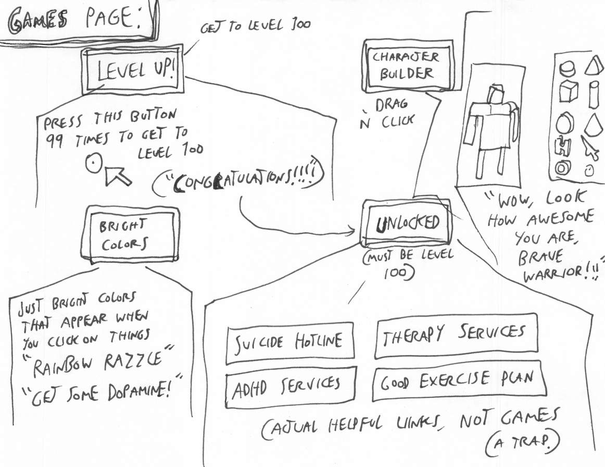
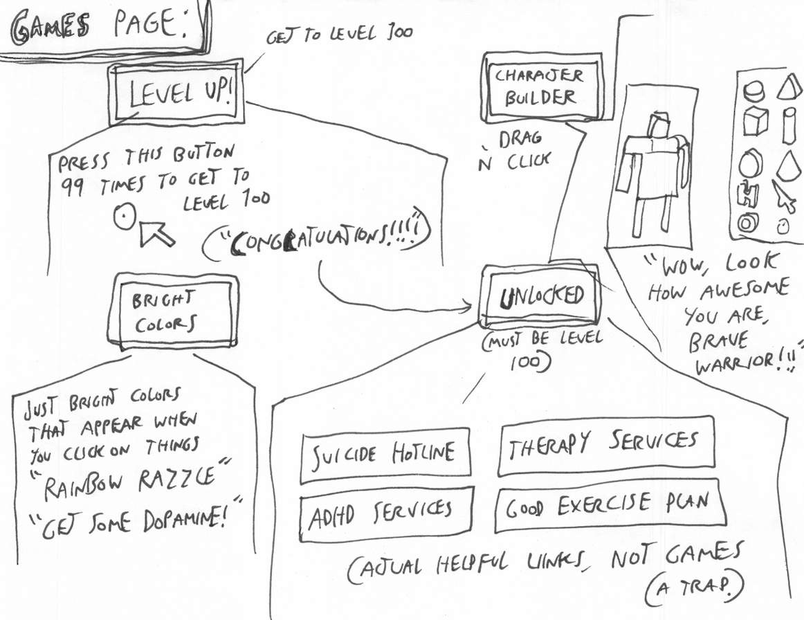

THIS PAGE IS AN OUTLINE FOR HOW THE GENERAL WEBSITE/PROJECT SHOULD BE BUILT. BECAUSE IT'S A GROUP PROJECT, THE DIRECTION OF THE WEBSITE CAN CHANGE. BIG UPDATES TO THE IDEA OF THE WEBSITE/PROJECT SHOULD PROBABLY GO HERE. THIS PAGE WILL BE DELETED AFTER THE WEBSITE IS FINISHED.
OUTLINE/GOAL: An interactive website that brings attention to screen addiction and mental health with 3 main sections: 1. Artwork/interviews by people with screen addiction. 2. Statistics and interactive infographics of screen addiction. 3. Simple games illustrating the effects of screen addiction and their causes.
The individual webpages should have outlines and comments for what their format/idea should be.
 
